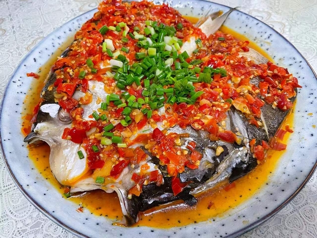
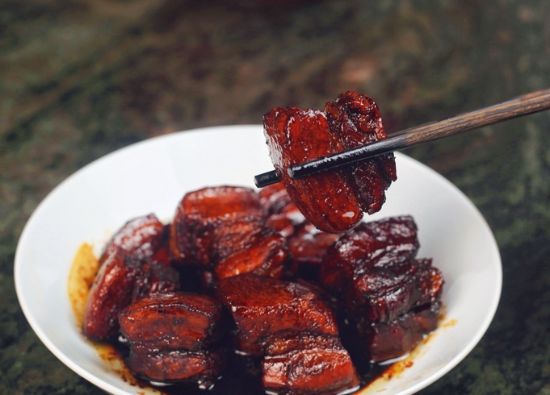
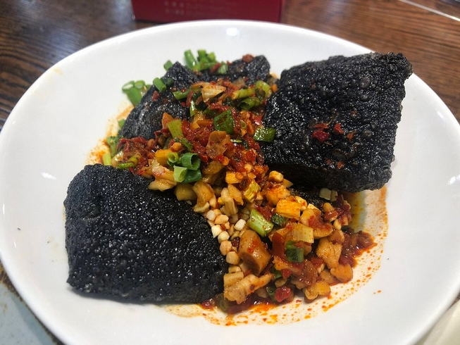

Contexte
Géographie
Niché au sud de la Chine, la province du Hunan est caractérisée par un paysage vallonné, alternant montagnes, collines et plaines fertiles. Son nom, qui signifie « au sud du lac », rend hommage au lac Dongting, le deuxième plus grand lac d’eau douce du pays.
La rivière Xiang, plus grand cours d’eau du Hunan, a inspiré le nom de la cuisine locale.
Le climat est semblable à celui du Sichuan: un climat subtropical humide avec des étés très chauds et des précipitations abondantes. Le Hunan est une région agricole prospère, produisant en grande quantité du riz, du thé, ainsi que divers fruits, notamment des agrumes.
Histoire
L’histoire de la cuisine du Hunan s’étend sur plusieurs siècles, évoluant au fil du temps en intégrant diverses influences tout en préservant ses traditions distinctives.
Les premières mentions de l'utilisation des piments dans la cuisine du Hunan remontent au XVIIe siècle, sous le règne de l’empereur Kangxi. À cette époque, la région commence à se faire connaître pour l’utilisation de ces piments forts dans ses plats. Cela marque un tournant dans le développement de la cuisine du Hunan, qui mettra en avant des saveurs épicées et relevées.
Au fil du temps, la cuisine du Hunan s'est enrichie et s’articule aujourd’hui autour de trois styles majeurs:
- Style de la rivière Xiang: originaire de Changsha, Xiangtan et Hengyang, ce style se caractérise par des plats riches en huile, aux couleurs vives et aux saveurs épicées, fraîches et parfumées.
- Style du lac Dongting : issu des villes de Yueyang, Yiyang et Changde, ce style, tout aussi huileux, se distingue par des textures plus épaisses et une combinaison de saveurs épicées et salées. Le mijotage est une technique courante, et le poisson y tient une place centrale.
- Style de l’ouest du Hunan : originaire des régions de Zhangjiajie, Jishou et Huaihua, il fait une large place aux viandes séchées et aux légumes marinés. Fortement influencé par les minorités ethniques locales, il se distingue par des saveurs acidulées, épicées et salées.
Caractéristiques
Saveurs
La cuisine du Hunan est souvent comparée à celle du Sichuan, en raison de leur goût prononcé pour les plats épicés et leur utilisation généreuse d’huile.
La cuisine du Hunan, avec son utilisation généreuse de piments, d'échalotes et d'ail, est renommée pour son caractéristique ganla (干辣), littéralement « sec et pimenté » c’est-à-dire un piquant pur et explosif, à l’opposé du mala (麻辣), c'est-à-dire « engourdissant et pimenté », de la cuisine du Sichuan. En effet, la cuisine du Hunan n'utilise pas de poivre du Sichuan.
Contrairement à la cuisine du Sichuan, la cuisine du Hunan fait un usage plus fréquent de produits fumés, comme le bacon et le tofu fumé.
Les saveurs prédominantes dans la cuisine hunanaise sont pimentées, salées et acides.
Ingrédients frais
La cuisine du Hunan met l’accent sur la fraîcheur des ingrédients, tandis que la cuisine du Sichuan utilise davantage d’ingrédients séchés.
Cela se reflète également dans l’utilisation des piments : au Hunan, ils sont généralement frais, tandis qu’au Sichuan, ils sont le plus souvent séchés, ce qui explique la différence d’intensité du piquant.
Fermentation
Les habitants du Hunan sont des maîtres dans l’art de la fermentation. Les cuisiniers des zones rurales fermentent le tofu et le mélangent avec de l'alcool fort, du sel, de l'anis étoilé et des flocons de piment, puis ils le placent dans des bocaux de fermentation pendant au moins un mois. Le résultat est une pâte crémeuse au goût de fromage pimenté utilisée comme condiment ou ingrédient pour des sauces.
Comme dans la cuisine sichuanaise ou cantonaise, le douchi, ou fèves de soja noires fermentées, sont couramment utilisés en cuisine au Hunan.
Mais l'ingrédient le plus emblématique de la région est sans doute le duojiao. Ces piments, souvent hachés, sont laissés à fermenter dans un mélange de sel, parfois avec d’autres ingrédients comme de l’ail ou du gingembre, pour développer une saveur salée, épicée et légèrement acide. Il est couramment utilisé pour ajouter du piquant et de la profondeur de saveur aux plats, notamment dans les sauces ou comme accompagnement pour les nouilles, le riz ou le poisson cuit à la vapeur.
Classiques
Tête de poisson pimentée
Ce plat est sans doute le plus emblématique du style de la rivière Xiang. Il s'agit d'une tête de poisson coupée dans sa longueur recouverte de duojiao et cuite à la vapeur.
Ce plat est traditionnellement préparé avec une carpe à grosse tête, une espèce d’eau douce abondante dans les rivières du Hunan. Elle a la particularité d'avoir une très grande tête sans écailles, ce qui en fait l'ingrédient idéal.
Les têtes sont beaucoup plus utilisées dans la cuisine chinoise qu'en Occident (porcs, poulets, canards, poissons et même lapins). Elles auraient même, selon la médecine traditionnelle chinoise, des vertus médicinales. Lorsqu'un poisson entier est servi à table, la tête du poisson est toujours réservée à l'invité d'honneur.

Porc braisé rouge du président Mao
Le porc braisé rouge ou Hongshao rou est un plat classique que l'on retrouve dans toute la Chine mais les deux variantes les plus populaires sont celle de Shanghai et celle du Hunan.
Il s'agit de poitrine de porc braisée dans une sauce riche, sucrée et épicée. La coloration rouge-brune de la viande est dûe au sucre caramélisé et à la sauce soja.
Originaire de Shaoshan, dans le Hunan, Mao Zedong aurait particulièrement apprécié ce plat. On raconterait qu'il mangeait ce plat presque tous les jours.

Tofu « puant » de Changsha
Le tofu puant est la spécialité de street food emblématique de Changsha, célèbre pour son odeur prononcée et sa saveur unique.
Fabriqué à partir de tofu fermenté jusqu'à plusieurs mois dans une saumure spéciale, il développe une texture unique : croustillant à l'extérieur et tendre à l'intérieur. Il est généralement recouvert de quelques légumes fermentés, de piment et d'herbes.
Apprécié des amateurs de saveurs intenses, ce mets emblématique du Hunan séduit les visiteurs en quête d’une expérience culinaire authentique et originale.
